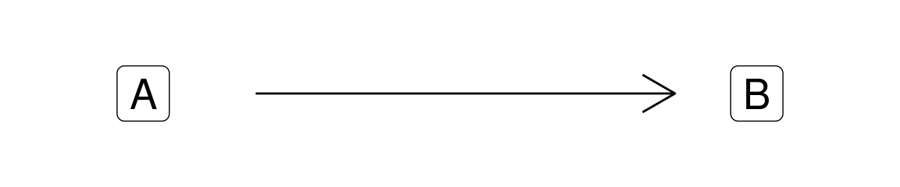
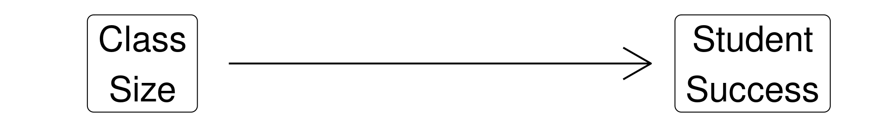
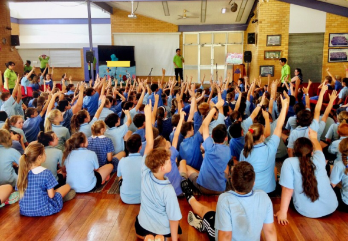

Correlation Does Not Imply Causation

Correlation and Causation

Building a Causal Argument



Building a Causal Argument



Randomized Controlled Trials (RCTs)

Randomized Controlled Trials (RCTs)

Our Challenge
Estimating Causal Effects Using Observational Data

The Data Generating Process (DGP)

The Data Generating Process (DGP)